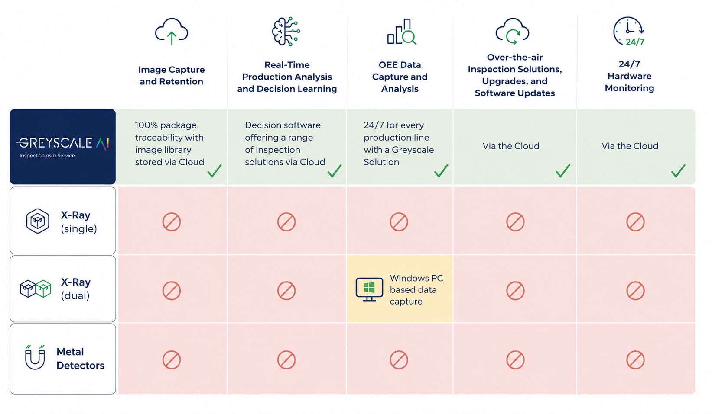

QA investigations
Confirm whether a suspect event was foreign material, quality drift, or a false alarm before escalating further.
Capability
Store inspection images, event metadata, and machine context so QA and operations teams can search, review, and document what happened.
Retention and review
Images and events are stored for agreed retention periods based on the customer deployment. Teams can search by time, SKU, line, event type, and related metadata to support investigations, traceability requests, and recurring quality review.

Search interface
Search filters
Event record
X-ray image
Metadata
Common uses
Confirm whether a suspect event was foreign material, quality drift, or a false alarm before escalating further.
Bring image evidence and event history into internal review rather than relying on memory or handwritten notes.
Connect what happened on the line to shifts, products, and machine state around the same time.